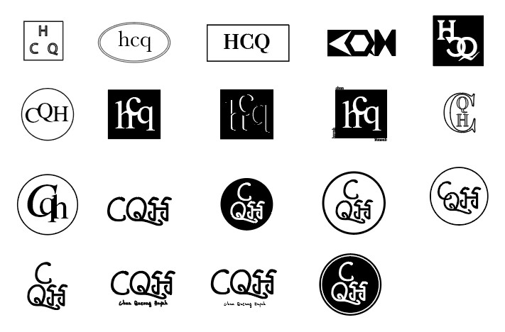
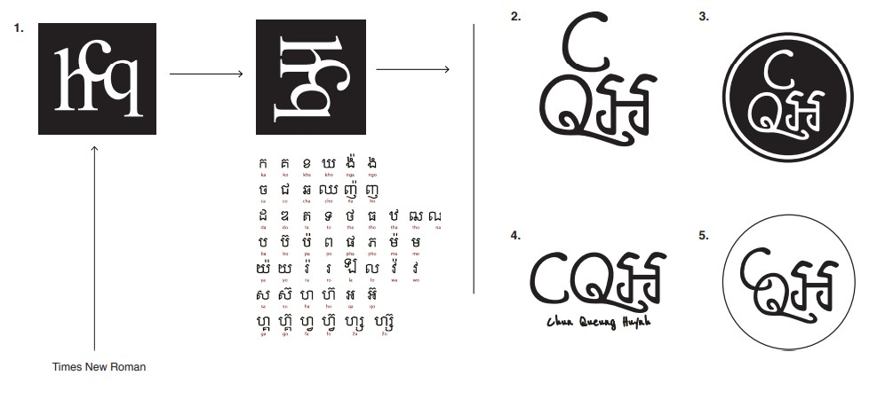
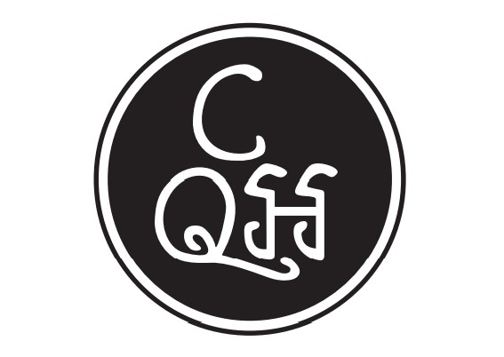

logotype
Nous avions comme exercice de créer notre logo à nous à partir de nos initiales. Mes initiales étant donc "h", "c" et "q". Il fallait ensuite créer une identité visuelle autour de ce logo.
Ci-dessus, la planche de recherche avec les différents logos créés sur Adobe Illustrator.
Au final, j'ai décidé de prendre inspiration sur mes origines et donc, je me suis inspiré de l'écriture cambodgienne qui est une écriture avec des formes très arrondis.
Voici donc le logo que j'ai finalement choisi.
Voir mon Projet d'Identité Visuelle